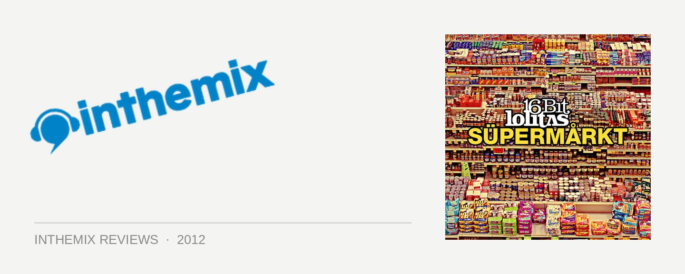

16 Bit Lolitas - Supermarkt
It was around 2006 that progressive fans really began to speak of 16 Bit Lolitas in hushed tones; amongst the infinite list of house, trance and techno artists to emerge from Holland, Ariaan Olieroock and Peter Kriek stood out for their ability to fuse deepness with spine-tingling melodies, as well as a genuine creative musicality that’s bequeathed plenty of originality to their club tunes. This approach has made them a natural fit for the modern progressive sounds of the Anjunadeep stable in recent years, though equally, they’ve mastered a shift in a more techno-influenced direction, an evolution that made utter sense and offered even more opportunities to chase that elusive deepness, via fusing their spacious melodies with the stripped-back rhythms of tech-house.
The Lolitas have also demonstrated they’re more than adept when it comes to the album format, in the form 2008’s criminally under-the-radar Warung Brazil 001. A mix compilation themed around the South American club of the same name, it also had an entire second disc of their own productions, seamlessly flowing together in a journey that was the perfect example of how a collection of club singles could be crafted into a proper album.
They’ve pulled off a similar trick with Supermarkt; the first thing that’ll most likely grab your attention is the Beatport-friendly collection of singles in the tracklist, though all home listeners should move immediately to the ‘Continuous Mix’ that strings them all together. It’s a common tactic used by a lot of dance artists with their albums, though this time, the Lolitas have truly spent some proper time in the studio ensuring it’s the ideal way to enjoy the album.
Supermarkt begins with what sounds like Ariaan and Peter flicking through the radio dial, the various sounds and muttered voices consistent with the grab-bag of products on the supermarket shelf that adorns the cover art; a low-fi hip hop brokenbeat breaks through the static, indicative of some of the leftfield directions the album will be taking.
Hoever, first we seep into the blissful, deep shimmers Same Light, Different Window, the album’s first grand Lolitas moment. A sumptuous slow burner that’s draws you in slowly, it’s largely beatless, and built around a central melodic thread that runs through the song’s 10-minute duration, which provides a framework for the electronic landscape as it morphs, rumbles, turns and rolls during that time. It’s so rich in detail, movement and emotion that it’s like a story in itself, and the effect is mesmerising.
The moody, distant vocals of Settle The Score sees the Lolitas still in subdued mode, not quite ready to usher us onto the dancefloor just yet. That moment comes though with Happy Hardcore Still Works; a gloriously deep builder that begins deep in the techno dirges, stacking layer upon layer, until it finally it begins to rumble when the solid groove kicks in.
The rollicking drum rolls and percussion of Fat Fly, punctured by the occasional sharp piano chord, is where the energy of Supermarkt really rises to a plateau, before it drops into a slice of progressive ecstasy with Snake Inverter, which represents the peak of the album. It’s pure, deep and unabashed 16 Bit Lolitas bliss; anchored by one of those trademark thick basslines, the impact again comes from how the duo gradually wrap a growing palette of sound around it. Strings, piano twinkles, an inaudible female hum, melodic elements that gently work their way into the mix; there’s definitely a more sophisticated musicality at work here. 100% beautiful.
The album’s most unconventional moment comes with the beautiful change of tact that is Na Na Nahana, as it drops into soft breakbeats with an even softer female croon, gentle guitar strums that build into a string quartet, and those familiar epic flourishes of melody. It’s an indie-dance sojourn, with an unmistakable 16 Bit Lolitas flavour.
We’re then taken through a few more darker club excursions, before the Lotlitas throw down another wildcard in the form of their remix of UNKLE and Nick Cave Money & Run. Representing another about turn into more earthy textures and acoustic sounds, again, it adds to the color and strength of the album’s palette, without sacrificing the consistency.
16 Bit Lolitas might stop short of the grand, evocative storytelling Deepchild managed with his superb Neukölln Burning album this year; however, what it does nail unequivocally is the format of how an album of club singles should be done – just like a DJ mix. We’re given all the flow and journey of an immaculately crafted mix compilation, and a proper, uninterrupted journey that has all the builds, the peaks and the lulls you’d expect. Unless you’re DJing, the ‘Continuous Mix’ is definitely the way the album should be listened to.
Supermarkt represents all at once the musical evolution of the Lolitas, an impressive grasp of musicality, as well somewhat of a template for dance producers when crafting their club singes into an artist album. As such, it’s a no-brainer addition to your Beatport shopping cart.